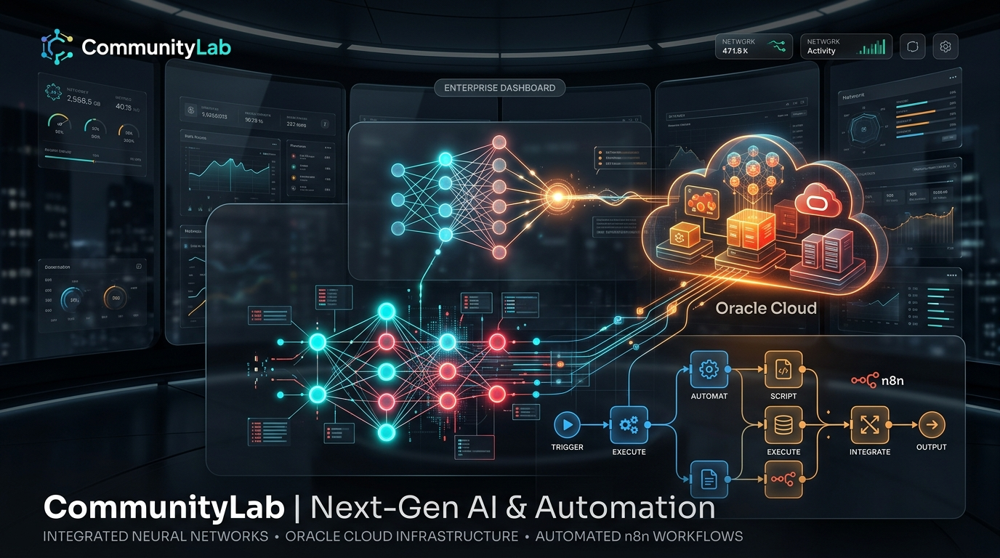

Post LinkedIn (Testimonio)
MS
👍 148
💬 32 comentarios
🔄 18 compartidos
Convierte la actividad orgánica de canales comunitarios (testimonios, logros y preguntas técnicas) en activos de marketing listos para distribución con IA de alto rendimiento, supervisión humana obligatoria y persistencia enterprise en Oracle Cloud Infrastructure (OCI).

Revisa el contenido generado por IA desde la sincronización en vivo con Google Sheets, edita los copys en tiempo real y autoriza la persistencia definitiva hacia OCI Object Storage.
Experimenta cómo el pipeline de n8n procesa mensajes en tiempo real: extrae sentimiento con Groq LLM, aplica scoring determinístico y bifurca al formato de marketing adecuado.
Estructura modular orientada a eventos con 3 workflows en n8n, contratos de datos estrictos y persistencia en la nube de Oracle.
Procesa interacciones entrantes, ejecuta la inferencia en Groq con LLaMA 3.3, calcula el scoring determinístico y bifurca en 3 ramas de generación especializada hacia Google Sheets.
📥 Descargar WF1 JSON
Sondea periódicamente las filas en estado decision = aprobado y realiza la subida de los archivos JSON mediante API REST de OCI Object Storage Always Free.
Cron diario que consolida el total de interacciones recibidas, calcula tasas de aprobación de curadores y distribuye el informe de salud del ecosistema comunitario.
📥 Descargar WF3 JSONConsolidación de las interacciones procesadas, tiempo de respuesta en inferencia y ratio de aprobación humana.
Detalle y trazabilidad punto a punto de cada requerimiento del desafío oficial de Oracle Next Education & Alura.
| Criterio del Hackathon | Estado | Implementación Técnica en CommunityLab |
|---|---|---|
| 1. Ingestión funcional de interacciones | ✅ Cumplido | Normalización en n8n mediante estructura unificada con autor, canal, texto, timestamp UTC y ID determinístico CL-YYYYMMDD-XXX. |
| 2. Análisis de sentimiento y extracción LLM | ✅ Cumplido | Nodo Groq con LLaMA 3.3 ejecutando extracción semántica (sentimiento, temas, insight y scoring determinístico ponderado) en formato JSON estricto. |
| 3. Generación de ≥ 2 formatos de marketing | ✅ Cumplido | 3 formatos implementados simultáneamente: Post de LinkedIn con ganchos/hashtags, FAQ Técnico estructurado y Newsletter Semanal. |
| 4. Orquestación del flujo en n8n | ✅ Cumplido | Pipeline modular completo con 14 nodos en WF1, switch condicional, merges, prompts especializados y control de excepciones. |
| 5. Persistencia en OCI Object Storage Always Free | ✅ Cumplido | Convención estricta en OCI Bucket: activos/{periodo}/{execution_id}/{asset_id}.json mediante llamadas REST API con IAM Request Signing. |
| 6. Demostración de ≥ 3 ejemplos de transformación | ✅ Cumplido | Dataset de prueba con 4 interacciones cubriendo las 3 ramas activas (testimonio, duda técnica, logro) y el caso de descarte por bajo score. |
| 7. Documentación y diagrama del pipeline | ✅ Cumplido | Documentación exhaustiva en README.md, contratos de datos formalizados, diagramas Mermaid y especificaciones de despliegue. |
| Diferencial: Curaduría Humana (Human-in-the-Loop) | ⭐ Destacado | Doble interfaz: Streamlit local (app.py) + Portal Web interactivo en Netlify conectado a Google Sheets en tiempo real. |
| Diferencial: Observabilidad Diaria | ⭐ Destacado | Workflow WF3 con cálculo automático de volumen, distribución de sentimiento y métricas de retención comunitaria. |